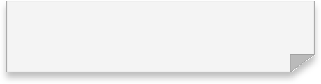

Anis Slimani
Inter-disciplinary Creative
CASSANDRA the Talking Robot is an interactive project combining sound sensors, a circuit board, and MAX MSP coding to create movement and audio responses. The motor activates and sound plays through a built-in speaker based on user interaction, showing both the possibilities and the limits of MAX MSP. Designed as an exploration of what the software can do, CASSANDRA centres the interaction between users and its responsive exterior, prompting curiosity about the boundaries of coding and robotics.
RICCARDO the Running Robot is an evolution of Cassandra, exploring human-computer interaction and “Tech-Panic” further. This autonomous robot uses a proximity sensor wired to the ZIP E-Card board by Interface Z, transmitting signals to MAX MSP. Riccardo reverses the usual direction of fear in human-AI relationships by performing the robot’s own fear of humans, prompting reflection on anxieties about artificial intelligence.
FORMIDO is the third and final robot in the series, a synthesis of Riccardo and Cassandra. This talking, moving robot combines their functionalities and personalities: the anxious and the spontaneous, the fearful and the sarcastic. Presented at the UGE Journée des Arts exposition on 20 April 2023, it stands as the culmination of the series and of the robots’ relationship with human emotion and behaviour.

In collaboration with Agathe MORNET
CASSANDRA the Talking Robot is an interactive project combining sound sensors, a circuit board, and MAX MSP coding to create movement and audio responses. The motor activates and sound plays through a built-in speaker based on user interaction, showing both the possibilities and the limits of MAX MSP.
RICCARDO the Running Robot is an evolution of Cassandra, exploring human-computer interaction and “Tech-Panic” further. It uses a proximity sensor wired to the ZIP E-Card board by Interface Z, transmitting signals to MAX MSP. Riccardo reverses the usual direction of fear by performing the robot’s own fear of humans.
FORMIDO is the third and final robot, a synthesis of Riccardo and Cassandra: the anxious and the spontaneous, the fearful and the sarcastic. Presented at the UGE Journée des Arts exposition on 20 April 2023.
In collaboration with Agathe MORNET